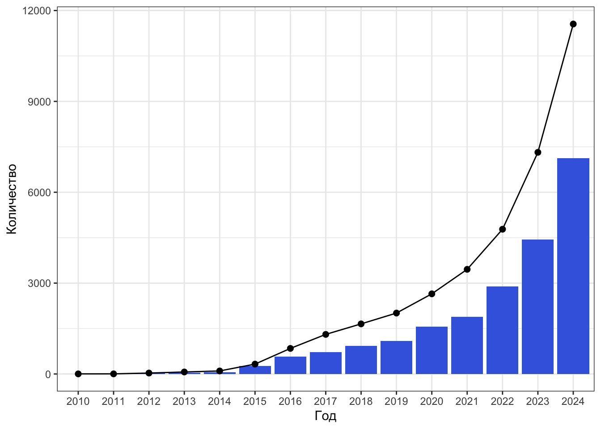

В этой главе мы познакомимся с самыми основами работы в R и начнем прям от Адама — с установки и интерфейса. Если вы уже видели R и RStudio и хотите сразу стартовать с работы в среде, прыгайте сюда.
2.1 Сверхкраткая история R
R придумали Росс Ихака (Ross Ihaka) и Роберт Джентльмен (Robert Gentleman) в 1992 году в Департаменте статистики Университета Окленда (Department of Statistics at Auckland, Иллюстрация 2.1). Изначальная цель — разработать язык, чтобы преподавать вводный курс статистики. За основу был взят язык S, разработанный Bell Laboratories, и в 1994 году была завершена первая версия (Ross, Ihaka, 2022).
Через пару лет разработчики перестали справляться с [электронными] письмами о багах и предлагаемых улучшениях, и в 1997 году R становится частью GNU Project (Ross, Ihaka, 2022, p. 17). В этом же году K. Hornik и F. Leisch создают на базе Венского технического университета (Technische Universität Wien) репозиторий CRAN (The Comprehensive R Archive Network) для совместной работы «ядерной» группы разработчиков (core team). В феврале 2000 года выходит первая стабильная версия языка.
Сегодня R развивается международной командой исследователей вычислительной статистистики (R Project) и поддерживается некоммерческой организацией R Foundation.
Почему R так называется?
Это шутка авторов. «R» обозначает первую букву их имён (Robert и Ross) (Ross, Ihaka, 2022, p. 12).
2.2 Обзор R
R является свободным программным обеспечением, распространяемым по лицензии GNU General Public License. Создававшийся изначально как язык для статистических вычислений, он впоследствии существенно расширил свои возможности, и теперь его можно считать полноценным языком программирования1. Хотя R и не является языком программирования общего назначения2 (general-purpose programming language), на нём можно:
- предобрабатывать и анализировать данные
- строить стильные и интерактивные визуализации
- создавать динамические отчеты, презентации и дашборды
- писать статьи, книги, сайты и приложения
- …
Для R написано бесчисленное множество пакетов (Иллюстрация 2.2), которые позволяют работать с самыми разными данными (поведенческими, опросниковыми, биологическими, лингвистическими, географическими и др.) и самыми разными статистическими методами (от t-теста до структурного моделирования). Количество доступных на CRAN пакетов экспоненциально растет с каждым годом.

R является высокоуровневым, интерпретируемым, мультипарадигмальным3 языком программирования с динамической типизацией4. У него очень простой, практически интуитивный, синтаксис, в результате чего — низкий порог вхождения по сравнению с другими языками программирования.
R широко используется в академической среде исследователями социальных и гуманитарных наук, и, пожалуй, его можно назвать стандартом анализа данных де-факто в этих областях. Конечно, если его сравнивать со статистическими программами, предоставляющими графический интерфейс (Statistica, SPSS, JASP, Jamovi и др.), то порог вхождения тут будет выше, однако R позволяет организовать работу с данными так, чтобы она была воспроизводима, чем, увы, не могут похвалиться большинство программ с графическими интерфейсами.
Кроме того, реализация статистических методов в R часто требует копнуть в суть масих методов чуть глубже, чтобы корректно провести анализ, что, с одной стороны, может создать некоторые трудности, но, с другой стороны, мотивирует лучше разобраться в метода анализа данных, а значит, более осознанно их использовать.
В общем, R — это стильно, можно и полезно.
2.2.1 R vs Python

В мире дата-аналитики существует великое противостояние двух языков — R и Python. На мой взгляд, довольно бессмысленное.
— Я не могу решить, делать мне на R или на Python…
— Какая к черту разница! Главное — делай!
Курилка на Армянском переулке около Департамента психологии НИУ ВШЭ
2010-е гг.
Хотя этот диалог случился, можно считать, довольно давно, он, как мне кажется, не утратил своей актуальности. Python — язык программирования общего назначения, R — больше специализирован на анализе данных. Первый имеет более широкие возможности, второй — удобнее для аналитики. Для тех, у кого нет опыта программирования и кому сложно даются технические области, думаю, R будет проще. На мой взгляд, в Python от аналитики отвлекает ярко выраженное ООП (объектно-ориентированное программирование), которое в R спрятано глубоко под капот. Аналитика же по своей сути — это диалог с данными, и в R его выстроить гораздо проще. Исходя из этого мой критерий следующий: для аналитики — R, для всего остального — Python.
Безусловно, это крайне субъективный критерий, и далеко не всем он покажется уместным и работающим. Есть другой — в R гораздо более интуитивно реализована работа с данными (tidyverse очень сильно выигрывает в интуитивности у pandas), как и пакеты для сложных методов анализа (психометрический анализ, SEM, смешанные линейные модели и др.).
Впрочем, если вы открыли эту книгу, предполагаю, что вы заинтересованы именно в R, поэтому позволю себе свернуть обсуждение великого противостояния, и перейти к сути.
2.3 Установка
Мы сейчас будем устанавливать все программы…5
Последовательность установки
Нам необходимо будет установить две вещи — R и RStudio. Во избежании возможных ошибок необходимо их ставить именно в этом порядке: сначала — R, затем — RStudio. Иначе RStudio может не найти R на компе и будет ругаться.
2.3.1 Установка R
Установить R можно с репозитория основного репозитория CRAN (The Comprehensive R Archive Network). Существуют версии R для всех трёх наиболее распространенных десктопных операционных систем:
В целом, установщики операционных систем обычно хорошо справляются со своей задачей, и в 90% случаев всё встаёт без багов. Однако ниже я оставлю некоторые комментарии о проблемах, с которыми сталкивался сам или о которых говорили знакомые и коллеги.
2.3.1.1 Win
Ниже есть пример установки R на Win (Иллюстрация 2.3), если вдруг у вас возникли какие-то проблемы при установке. Скорее всего всё прошло достаточно ровно.
Самая частая проблема — имя пользователя на кириллице. Компьютер вообще достаточно плохо переваривает кириллические символы. Особенную же проблему составляют такие символы в путях к файлам. Поскольку на Win папка пользователя называется именем пользователя, то в случае кириллического имени, естественно, её имя будет на кириллице. Это можно пережить, перезадав некоторое дефолтные пути в настройках, однако если есть возможность переименовать пользователя и папку, я бы рекомендовал это сделать. Ну, так, чтобы не было неожиданных внезапностей.
2.3.1.2 macOS
Apple silicon vs Intel Macs
Обратите внимание на разные версии для Apple silicon (M1) и Intel Macs.
Ниже есть пример установки R на Mac (Иллюстрация 2.4), если вдруг у вас возникли какие-то проблемы при установке.
Тут в 99.9% случаев всё ровно. Бывает, что уже в процессе работы некоторые пакеты жалуются на недоустановленное что-то или на какие-либо несовместимости, но это случается невероятно редко и обычно достаточно легко лечится.
2.3.1.3 Linux
Обилие дистрибутивов
Конечно, если вы работете на Linux, то прекрасно знаете о дистрибутивах и их особеностях. Однако отмечу, что на разные дистрибутивы Linux устанавливаются разные версии.
Примеры на Linux
Я работаю на Ubuntu (ВЕРСИЯ), поэтому примеры для Linux будут приводится именно для этого дистрибутива. На других дистрибутивах могут быть свои особенности.
Ниже есть пример установки R на Linux (Ubuntu) (Иллюстрация 2.5), если вы только начинаете знакомство с Linux и у вас возникли какие-то проблемы при установке.
Если вы пользователь Linux, значит R вы, вероятно, ставите через Terminal. Например, с помощью такой команды:
sudo apt install r-base-devСкорее всего, всё пройдет хорошо, и базовый R будет работать. Проблемки могут случиться чуть дальше, когда мы будем ставить дополнительные пакеты, в которых будет идти основная наша работа — R может не найти некоторые системные пакеты. Такая проблема возникла у меня возникла (на Ubuntu 22.04) — помогла команда ниже:
sudo apt-get install -y libxml2-dev libcurl4-openssl-dev libssl-dev libfontconfig1-dev libharfbuzz-dev libfribidi-dev linfreetype6-dev libpng-dev libtiff5-dev libjpeg-devaСначала мы будем знакомиться с базовым R и работать только в нём, но имейте в виду, что тут есть некая команда, которая может пригодиться.
2.3.2 Установка RStudio
Казалось бы, мы поставили R, и можно было бы на этом закончить. И это, в общем-то, правда — можно работать и просто в R. Однако для упрощения и увеличения приятности работы стоит установить RStudio6. Установочные файлы лежат тут. На всякий случай, прикреплены примеры установки RStudio для Win, macOS и Linux (Иллюстрация 2.6).
RStudio — это интегрированная среда разработки (IDE) (подробнее см. тут). Она расширяет возможности R, предоставляет более юзабельный интерфейс для взаимодействия с языком и в целом делает работу с R радостной и приятной.
RStudio это не единственная среда для работы с R, но определенно самая удобная и популярная, поэтому мы будем пользоваться именно ею. RStudio является IDE, разработанной специально для работы в R, однако это вовсе не значит, что в ней нельзя использовать другие языки программирования. Например, книжка, которуя вы сейчас читаете, написана с использованием R, Python, HTML, SASS, JavaScript, YAML и других языков — при этом вся работа велась в RStudio. Вот такая мощная вещь.
2.3.2.1 Что такое IDE?
Интегрированная среда разработки (IDE, integrated development environment) — это специальная программа, которое предоставляет широкий спектр возможностей для разработки программного обеспечения. Возможно, вы слышали такие слова, как PyCharm или Visual Studio Code — это всё варианты IDE.
Обычно IDE содержит несколько ключевых компонентов:
- текстовый редактор для написания скриптов
- транслятор языка
- отладчик (debugger)
- средства автоматизации сборки (build automation tools)
Обычно IDE позволяют работать с несколькими языками программирования, но бывают и специализированные.
И хотя всё ещё присутствует холивар относительного того, является ли R языком программирования, который отмечался в сносках, RStudio однозначно можно назвать полноценной IDE, так как разработка в ней вполне может вестить. Пример продукта разработки прямо перед вами — книжка, которую вы сейчас читаете.
2.3.3 Posit Cloud
В подавлающем большинстве случаев работа в R происходит на десктопной версии. Однако это не единственный вариант. Например, если вам нужно резко, быстро и несложно обработать небольшие данные, а вы в отпуске без своего любимого персонального компа, можно поработать в облачной версии RStudio — Posit Cloud.
В Posit Cloud используются RStudio Projects7, интерфейс полностью совпадает с десктопной версией RStudio, доступны дополнительные пакеты. Однако объем доступной оперативной памяти существенно ограничен, что, безусловно, может создать существенные сложности. Тем не менее, такой вариант работы вполне можно рассмотреть в каких-то ограниченных условиях.
2.4 Интерфейс R

2.5 Интерфейс RStudio

2.6 Работа в консоли
2.7 Работа в скрипте
2.8 Цитирование R
На R (R Core Team, 2023), как и на любые ресурсы, используемые при написании статьи или отчета, следует ссылаться — цитировать в разделе References. Для этого существует удобная команда:
citation()To cite R in publications use:
R Core Team (2023). _R: A Language and Environment for Statistical
Computing_. R Foundation for Statistical Computing, Vienna, Austria.
<https://www.R-project.org/>.
A BibTeX entry for LaTeX users is
@Manual{,
title = {R: A Language and Environment for Statistical Computing},
author = {{R Core Team}},
organization = {R Foundation for Statistical Computing},
address = {Vienna, Austria},
year = {2023},
url = {https://www.R-project.org/},
}
We have invested a lot of time and effort in creating R, please cite it
when using it for data analysis. See also 'citation("pkgname")' for
citing R packages.В аутпуте есть вариант ссылки в форматах APA и BibTeх. Второй вам пригодится, если вы пишете отчеты в \(\LaTeX\) или R Markdown и Quarto, первый — в других случаях. Если вы копируете APA-цитату в текстовый редактор, добавьте курсивное форматирование на текст, заключенный между андерскорами (нижними подчеркиваниями8, _) , а сами андерскоры удалите9.
Хорошим тоном будет сослаться и на RStudio (Posit team, 2024):
RStudio.Version()$citation
To cite RStudio in publications use:
Posit team (2024). RStudio: Integrated Development Environment for R. Posit Software,
PBC, Boston, MA. URL http://www.posit.co/.
A BibTeX entry for LaTeX users is
@Manual{,
title = {RStudio: Integrated Development Environment for R},
author = {{Posit team}},
organization = {Posit Software, PBC},
address = {Boston, MA},
year = {2024},
url = {http://www.posit.co/},
}
$mode
[1] "desktop"
$version
[1] ‘2024.4.1.748’
$long_version
[1] "2024.04.1+748"
$release_name
[1] "Chocolate Cosmos"
2.9 Обновления
2.10 Работа в R из командной строки
Session Info
sessionInfo()R version 4.3.2 (2023-10-31)
Platform: x86_64-apple-darwin20 (64-bit)
Running under: macOS Sonoma 14.4.1
Matrix products: default
BLAS: /Library/Frameworks/R.framework/Versions/4.3-x86_64/Resources/lib/libRblas.0.dylib
LAPACK: /Library/Frameworks/R.framework/Versions/4.3-x86_64/Resources/lib/libRlapack.dylib; LAPACK version 3.11.0
locale:
[1] en_US.UTF-8/en_US.UTF-8/en_US.UTF-8/C/en_US.UTF-8/en_US.UTF-8
time zone: Europe/Moscow
tzcode source: internal
attached base packages:
[1] stats graphics grDevices utils datasets methods base
other attached packages:
[1] leaflet_2.2.2 rvest_1.0.4 lubridate_1.9.3 forcats_1.0.0
[5] stringr_1.5.1 dplyr_1.1.4 purrr_1.0.2 readr_2.1.5
[9] tidyr_1.3.1 tibble_3.2.1 ggplot2_3.5.1 tidyverse_2.0.0
loaded via a namespace (and not attached):
[1] utf8_1.2.4 generics_0.1.3 xml2_1.3.6
[4] stringi_1.8.4 hms_1.1.3 digest_0.6.35
[7] magrittr_2.0.3 evaluate_0.23 grid_4.3.2
[10] timechange_0.3.0 fastmap_1.1.1 jsonlite_1.8.8
[13] httr_1.4.7 fansi_1.0.6 crosstalk_1.2.1
[16] scales_1.3.0 jquerylib_0.1.4 cli_3.6.2
[19] rlang_1.1.3 munsell_0.5.1 withr_3.0.0
[22] yaml_2.3.8 tools_4.3.2 tzdb_0.4.0
[25] colorspace_2.1-0 curl_5.2.1 vctrs_0.6.5
[28] R6_2.5.1 lifecycle_1.0.4 leaflet.providers_2.0.0
[31] htmlwidgets_1.6.4 pkgconfig_2.0.3 pillar_1.9.0
[34] gtable_0.3.5 glue_1.7.0 xfun_0.43
[37] tidyselect_1.2.1 rstudioapi_0.16.0 knitr_1.45
[40] farver_2.1.1 htmltools_0.5.8.1 rmarkdown_2.26
[43] labeling_0.4.3 compiler_4.3.2 Хотя относительного этого утверждения есть и другие мнения (см. тред, пост и пост).↩︎
Подробнее см. приложение.↩︎
Но глубоко внутри — объектно-ориентированным.↩︎
Подробнее в том же приложении.↩︎
На случай, если новое поколение утратило связь с культурным прошлым, а старое поколение желает, чтобы ему подсвело олдскулы — источник.↩︎
По пути надо ещё не перепутать её с R-Studio, которая восстанавливает данные с диска. Критическое сходство названий двух программ обязывает к повышенной внимательности при написании работ/статей/отчётов/заявок на гранты, в которых вы упоминаете RStudio — иногда рецензенты весьма недоумевают, как исследователи анализировали данные с помощью ПО для восстановления данных. Хотя это может звучать несколько странно, такой случай имел место быть в реальности…↩︎
Их мы будем обсуждать в разделе о работе с данными.↩︎
Согласно правилам современного русского литературного языка, термин «нижнее подчеркивание» является плеоназмом, так как любое подчеркивание выполняется снизу. Однако такой термин используется наряду с терминами подчерк и underscore, поэтому использую его и я.↩︎
Такой синтаксис используется в Markdown — в частности, R Markdown.↩︎